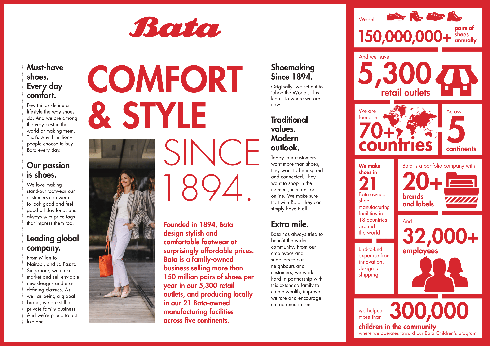
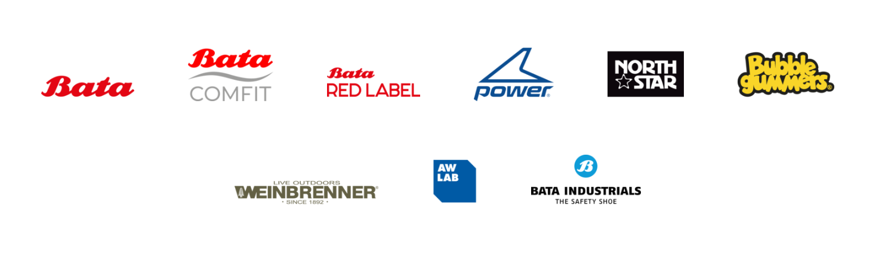

Bata is a multinational footwear, apparel and fashion accessories manufacturer and retailer. Founded in 1894 by Tomáš Baťa, the company has grown into one of the world's leading shoe manufacturers, headquartered in Lausanne, Switzerland.
Bata's story began in Zlín, Czech Republic, when Tomáš Baťa, his brother Antonín and his sister Anna founded T. & A. Bata Shoe Company with a focus on affordability, quality, and durability. The company thrived for over 129 years, even through the tumultuous events of the early 20th century, including World War I and the Great Depression.
Bata in India
Bata's journey in India began in 1931, and now it
has grown exponentially to become the largest
footwear retailer in India. Bata India Limited,
operates over 1,814 stores (As of FY22). Bata's
strategy of localization is the secret sauce of its
success. It understands and caters the diverse needs
of an Indian consumer and offers a wide range of
products that span across various categories, price
points, and styles, ensuring there's something for
everyone.
In addition to its product offerings, Bata also
adapts its marketing strategies to resonate with the
local culture and values. Tailor its messaging and
branding to align with Indian sensibilities and
lifestyle, making it more relatable and appealing to
people.
Bata's presence in India goes beyond just business operations. It has made substantial investments in local manufacturing, with several factories spread across the country. This has provided numerous employment opportunities for the local population, contributing to the economy and improving livelihoods. Moreover, Bata has been involved in several community development initiatives in India. These range from organizing health and wellness programs to providing educational opportunities and more.
Brands of Bata
Bata is a portfolio company with 20+ brands and labels, including
To view all the brands, visit Bata - Brands.
To Know more Bata
- Overview - https://www.thebatacompany.com/
- History - https://www.thebatacompany.com/about-us/history/
- Values - https://www.bata.com/in/about-us.html
- To Shop - https://www.bata.com/in/